Dodáváme, seřizujeme a repasujeme redukční, pojistné, uzavírací i regulační ventily pro teplárny, chemické provozy, energetiku a potravinářství v celé České republice.
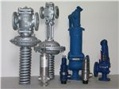
Poskytujeme autorizovaný prodej, záruční i pozáruční servis a technickou podporu pro přední evropské výrobce armatur.
Samočinné regulátory výstupního tlaku pro páru, plyny a kapaliny pracující bez cizí energie. Řady 17-3, 17-5 a příslušenství.
Špičkové mezipřírubové zpětné ventily typ 812 a 802, uzavírací klapky a zavodňovací systémy s maximální spolehlivostí uzávěru.
Pružinové plnozdvižné i proporcionální pojistné ventily pro bezpečné jištění tlakových nádob, kotlů a technologických potrubí.
Robustní průmyslové armatury pro vysokotlaké a vysokoteplotní aplikace v petrochemii, plynárenství a energetice.
P.A. servis spol. s r.o. byla založena v roce 1999 jako nástupce sdružení fyzických osob PA servis, které působilo na trhu již od roku 1992.
Zahájení činnosti v oblasti oprav, seřizování a dodávek redukčních a pojistných ventilů pro průmyslové podniky v Olomouci a na střední Moravě.
Transformace na společnost s ručením omezeným pod vedením Radka Dopity. Rozšíření servisních kapacit a vybudování stálých skladových zásob armatur a náhradních dílů.
Instalace profesionální hydraulické a pneumatické zkušební stolice pro zkoušky pevnosti a těsnosti dle ČSN EN 12266-1. Vystavování certifikátů a protokolů o seřízení.
Areál v Olomouci-Hodolanech zajišťuje zpracování návrhů redukčních stanic, dodávky nových armatur, generální repase, lapování sedel i havarijní technickou podporu.
Nabízíme ucelený sortiment armatur pro páru, plyny, vodu i agresivní média od renomovaných výrobců.
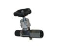
1. VENTILYSamočinné regulátory výstupního tlaku pro páru, vzduch, nehořlavé plyny i vodu. Pracují bez cizí energie, ovládání membránou.
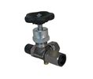
1. VENTILYUdržují stálý vstupní tlak média před ventilem nebo slouží pro spolehlivý přepouštěcí obtok čerpadel a výměníkových stanic.
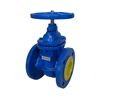
1. VENTILYPlnozdvižné a proporcionální pružinové pojistné ventily k jištění kotlů, tlakových nádob a parních tras před přetlakem. Dodáváno s protokolem.
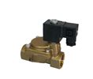
1. VENTILYDvoucestné a třícestné armatury s elektrickými nebo pneumatickými servopohony pro přesnou plynulou regulaci parametrů média.
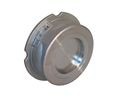
1. VENTILYMezipřírubové nerezové zpětné ventily SOCLA 812 a litinové/mosazné SOCLA 802. Zamezení zpětného toku s minimální tlakovou ztrátou.
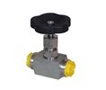
1. VENTILYVysokotlaké nerezové jehlové ventily DN 7 (1/2") PN400 pro jemné škrcení, odběr vzorků a připojení měřicích přístrojů.
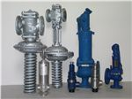
1. VENTILYHermeticky utěsněné uzavírací ventily s nerezovým vlnovcem zaručující nulový únik páry a teplonosných médií do okolí.
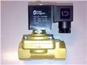
1. VENTILYPřímo i nepřímo řízené elektromagnetické ventily pro automatizované uzavírání a otevírání okruhů v průmyslových linkách.
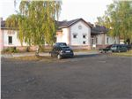
2. ŠOUPÁTKALitinová a ocelová šoupátka s pružným nebo pevným klínem pro vodárenství, teplárenství a rozvody stlačeného vzduchu.
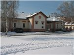
2. ŠOUPÁTKAKovaná a litá ocelová šoupátka se stoupajícím vřetenem pro vysokotlakou páru, napájecí vodu a energetické bloky.
Speciální šoupátka s nerezovým nožem pro kaly, sypké směsi, odpadní vody a viskózní kapaliny v papírenství a čistírnách odpadních vod.
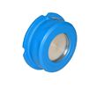
3. KLAPKYMezipřírubové klapky typu Wafer i Lug s manžetami EPDM, NBR nebo FKM pro spolehlivé uzavírání a regulaci průtoku kapalin a plynů.
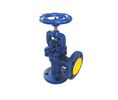
3. KLAPKYKlapky s dvojitou excentricitou disku pro páru, horkou vodu a chemická média. Dlouhá životnost těsnicího sedla PTFE/kov.
Konstrukce kov na kov pro extrémní teplotní a tlakové podmínky v energetice a chemickém průmyslu bez tření při otevírání.
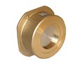
3. KLAPKYKompaktní mezipřírubové armatury bránící zpětnému toku v čerpacích a chladicích soustavách. Minimální stavební délka.
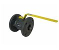
4. KULOVÉ KOHOUTYPřírubové plnoprůtokové kulové kohouty. Speciální provedení KPC-G certifikované pro hořlavé plyny s rozsahem teplot -20 °C až +60 °C.
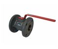
4. KULOVÉ KOHOUTYNerezové a mosazné závitové kulové kohouty pro rozvody stlačeného vzduchu, topné vody, kondenzátu i technických kapalin.
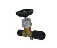
5. ODVADĚČE KONDENZÁTUKontinuální odvod vznikajícího kondenzátu bez prodlevy a bez úniku ostré páry. Integrovaný termostatický odvzdušňovací element.
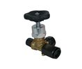
5. ODVADĚČE KONDENZÁTUKompaktní odvaděče využívající tlakově řízenou kapsli. Vypouštějí podchlazený kondenzát a automaticky odvzdušňují systém.
Vysoce odolné odvaděče s jedinou pohyblivou částí (nerezovým diskem). Odolné vůči vodním rázům a venkovnímu promrzání.
Využívají bimetalové desky s proměnným prohnutím dle teploty. Vhodné pro přehřátou páru a odvodnění dálkových parovodů.
Tlakoměrové zkušební ventily s kontrolním ramenem (1110416) umožňující připojení kontrolního manometru bez přerušení provozu.
Mosazné a nerezové dvoucestné i třícestné kohouty pro bezpečné odtlakování a výměnu manometrů v nízkotlakých soustavách.
Trubkové smyčky pro chlazení páry před vstupem do manometru a kapilární tlumiče tlakových pulsací chránící měřidlo před poškozením.
Přírubové i závitové filtry typu Y s nerezovým sítem. Povinná ochrana před redukční a regulační ventily dle montážních pokynů.
Ukazatele stavu hladiny v kotlích a tlakových nádržích s borosilikátovým reflexním sklem a průhledítka pro kontrolu toku média.
Nerezové a pryžové kompenzátory dilatací, demontážní vložky, krkové i ploché příruby ČSN EN 1092-1 a bezazbestová těsnění.
Regulátory výstupního tlaku pracují samočinně bez pomocné energie. Pro zajištění spolehlivého chodu je nutné dodržet přesná pravidla montáže.
Regulátor se montuje do vodorovného potrubí ve svislé poloze membránou dolů a tak, aby směr průtoku souhlasil se šipkou na tělese.
Průměr vstupního potrubí volíme shodný se světlostí regulátoru a výstupní tak, aby rychlost nepřekročila povolené meze:
Při průtocích páry nad 5 t/h doporučujeme provést kontrolu hlučnosti.
Impulsní potrubí napojuje uklidněnou oblast výstupního tlaku s prostorem nad membránou a doplňuje ochranný kondenzát.
Ventil při dodání není nastaven na provozní tlak odběratele. Seřízení se provádí za provozu otáčením stavěcího šroubu pružiny.
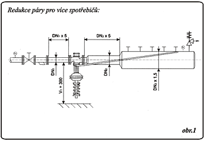
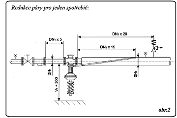
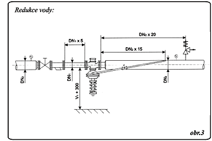
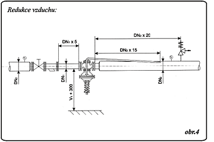
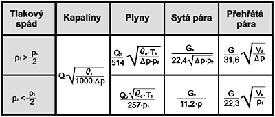
Každá opravená či nová armatura před expedicí prochází důkladnou zkouškou těsnosti uzávěru a pevnosti tělesa. V areálu v Olomouci-Hodolanech disponujeme hydraulickou i pneumatickou zkušební stolicí s kalibrovanými manometry.
Zadejte médium, tlak a požadovanou funkci – systém Vám doporučí vhodné technické řešení.
Veškeré dodávky a servisní práce realizujeme podle platných technických norem a závazných obchodních podmínek.
Naše přímočinné redukční ventily splňují přísné požadavky na bezpečnost a tlakovou těsnost dle evropských a českých strojírenských směrnic.
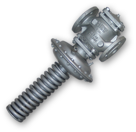
Oficiální certifikát výrobku P.A. servisIČO 25834606, se sídlem Olomouc, Holická 31/20 (Hodolany 570), PSČ 779 00, zapsané v obchodním rejstříku Krajského soudu v Ostravě, oddíl C, vložka 20468.
Tyto Všeobecné obchodní podmínky (VOP) upravují vztahy mezi prodávajícím (P.A. servis spol. s r.o.) a kupujícím vznikající při dodávkách armatur a poskytování servisních prací. Jsou nedílnou součástí všech kupních smluv a objednávek.
K uzavření smlouvy je nutná písemná objednávka kupujícího zaslaná poštou, faxem nebo elektronickou formou na e-mailovou adresu paservis@paservis.cz. Objednávka musí obsahovat přesnou specifikaci armatury (typ, DN, PN, médium, provozní teplota a otevírací tlak).
Zboží je dodáváno z centrálního skladu v Olomouci nebo odesíláno přepravní službou. Spolu se zbožím jsou předávány příslušné atesty o zkouškách těsnosti a pokyny pro montáž a údržbu.
Na dodané armatury a provedené opravy poskytujeme standardní záruku dle platných předpisů. Servisní zásahy a seřizování provádějí certifikovaní technici na kalibrovaných zařízeních.
Společnost P.A. servis spol. s r.o. se dlouhodobě podílí na podpoře mládežnického sportu, volnočasových aktivit dětí a komunitních projektů v Olomouckém kraji.
Pravidelný příspěvek na sportovní vybavení a činnost oddílů mládeže na střední Moravě.
Spolupráce se středními technickými školami při odborné přípravě mladých mechaniků.
Jsme Vám k dispozici pro odborné konzultace, návrhy redukčních stanic, dodávky armatur i havarijní servis.
Vyplňte Vaše provozní parametry pro rychlé zpracování nabídky: